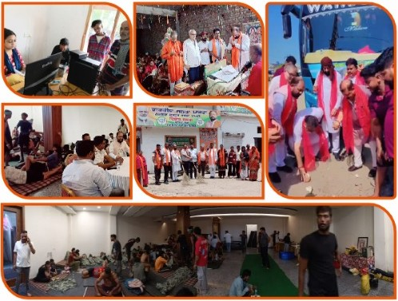

आप सभी को सादर नमस्कार 🙏
सेवा ही संगठन, संगठन ही शक्ति
समर्पित · सेवा · संगठन · राष्ट्र — लुधियाना दक्षिण की जनता के साथ, हर कदम पर।
संपर्क करें
परिचय
पत्नी — वंशीका गर्ग (व्यवसायी) · माता — गृहिणी। तीन भाई : अंकुर गर्ग (वेडिंग प्लानर), अंकुश गर्ग (लोहे का व्यापार), अंशुल गर्ग (NRI)।
भाजपा के साथ
2020 में भारतीय जनता पार्टी से जुड़ने के बाद से संगठन और जनसेवा का सफर।
समाज के बीच
धार्मिक-सामाजिक आयोजनों से लेकर रक्तदान और मेडिकल कैंप तक — सेवा का दायरा।

ज़रूरतमंद की पुकार पर सबसे पहले पहुँचना ही सेवा का पहला कदम है।
देश की सेवा और सामाजिक कार्यों के लिए हर समय तत्पर।
हर साल Blood Donate Camp का आयोजन किया जाता है एवं ज़रूरतमंदों को Donor उपलब्ध कराने में सहयोग किया जाता है।
ज़रूरतमंद मरीज़ों के लिए Medical Camp लगाए जाते हैं।
बदलाव का संकल्प
पंजाब में भाजपा की सरकार बनने पर लुधियाना दक्षिण विधानसभा में करने वाले मुख्य कार्य।
तीन महीने के अंदर साफ़ व स्वच्छ पानी की सुविधा सुनिश्चित की जाएगी।
विधानसभा की प्रत्येक एंट्री पर नशाखोरों की रोकथाम के लिए पुलिस पार्टी बढ़ाई जाएगी।
तीन महीने में सभी सड़कों का काम करवाया जाएगा।
क्षेत्र से लुटेरों / बदमाशों को सलाखों के पीछे किया जाएगा।
छोटे प्लॉट की रजिस्ट्री करवाने में हो रही चोर-बाज़ारी को ख़त्म किया जाएगा।
क्षेत्र में इंडस्ट्री मालिकों के लिए विशेष कमेटी बनाई जाएगी, जो उनकी सभी समस्याओं का समाधान करेगी।
यू.पी. व बिहार से आकर पंजाब में बसे हमारे भाई-बहनों की सुरक्षा के लिए सभी प्रमुख चौकों पर पुलिस पार्टी तैनात की जाएगी।
यादगार क्षण
संगठन, जनसंपर्क और कार्यक्रमों की कुछ झलकियाँ। बड़ा देखने के लिए फ़ोटो पर टैप करें।
आगे की राह
नशा-मुक्त पंजाब, नशा-मुक्त लुधियाना दक्षिणनशा तस्करों पर सख़्त कार्रवाई, नशा-मुक्ति व काउंसलिंग सहायता, और हर वार्ड में युवा जागरूकता अभियान।
हर बच्चे के लिए शिक्षाबेहतर सरकारी स्कूल, युवाओं के लिए मुफ़्त कोचिंग और स्किल सेंटर, तथा ज़रूरतमंद परिवारों के विद्यार्थियों के लिए छात्रवृत्ति सहायता।
व्यापार और रोज़गारछोटे व्यापारियों और उद्योगों को सहयोग, आसान अनुमतियाँ, तथा स्किल ट्रेनिंग और प्लेसमेंट मेलों से स्थानीय रोज़गार।
सीवरेज और ड्रेनेजबंद पड़ी सीवर लाइनों को बदलना और बरसाती पानी की निकासी के लिए ड्रेन बिछाना, ताकि कॉलोनियाँ सूखी और ओवरफ्लो-मुक्त रहें।
स्वच्छ गलियाँ, आवारा पशु-मुक्तघर-घर कूड़ा संग्रह, ढके हुए डंप, और आवारा पशुओं व कुत्तों पर नियंत्रण।
सुगम ट्रैफ़िक और पार्किंगजाम वाले चौकों पर सिग्नल और सुरक्षित डिज़ाइन, तथा बाज़ारों के पास पार्किंग।
सुरक्षित, रोशन, हरे-भरे मोहल्लेLED स्ट्रीट लाइटें, प्रमुख चौराहों पर CCTV, और सुव्यवस्थित पार्क व खेल मैदान।
घर के पास स्वास्थ्य सेवाउन्नत डिस्पेंसरियाँ, नियमित मुफ़्त स्वास्थ्य शिविर, और हर पात्र परिवार के लिए आयुष्मान कार्ड।
स्वच्छ हवा और बुड्ढा नालाउद्योगों से गंदे पानी के शोधन और धुआँ घटाने के लिए प्रयास, नालों व सड़कों के किनारे पौधारोपण।
वन-विंडो हेल्प डेस्कआधार, राशन, पेंशन, वोटर और आयुष्मान कार्ड तथा शिकायत-निवारण के लिए जन सेवा केंद्र।
मेरा मानना है कि राजनीति केवल सत्ता का माध्यम नहीं, बल्कि समाज और राष्ट्र सेवा का सबसे बड़ा मंच है। भा.ज.पा. की विचारधारा ‘अंत्योदय, अनुशासन और राष्ट्रवाद’ मेरे मार्गदर्शक सिद्धांत हैं। मैं पूरी निष्ठा, ईमानदारी और समर्पण के साथ संगठन तथा समाज की सेवा के लिए प्रतिबद्ध हूँ।
हमसे मिलें
Sua Road, Near Axis Bank, Giaspura,
Ludhiana, Punjab, India
कार्यालय का कार्य नियमित रूप से जारी है।
Google Maps पर देखें
जुड़े रहें
सोशल मीडिया
इंस्टाग्राम, फ़ेसबुक, यूट्यूब, X और व्हाट्सऐप चैनल पर हमारे पेज — वीडियो और ताज़ा अपडेट।
Instagram
Facebook
YouTube
X (Twitter)
WhatsApp Channel
चैनल से जुड़ेंताज़ा जानकारी, कार्यक्रम और संदेश सीधे अपने फ़ोन पर पाने के लिए हमारे व्हाट्सऐप चैनल से जुड़ें।